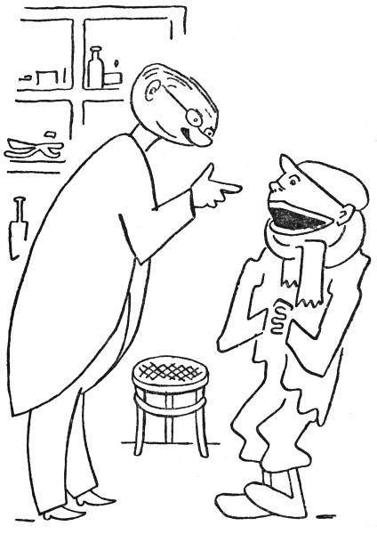

Případ s hejkalem
„Tomu už je taky hezkých pár let, co se v lese na Krákorce zdržoval hejkal. To víte, to je jedno z nejprotivnějších strašidel, co vůbec kdy bývaly. Jde člověk v noci lesem, a najednou to za ním zahejká, zařičí, zaúpí, zakvílí, zavyje nebo se tak hrozně zachechtá. To se rozumí, člověk se vyděsí na smrt, taková hrůza na něj padne a on běží, pádí, utíká, div duši strachem nevypustí. To teda dělá hejkal, a tuhle neplechu tropil na Krákorce léta letoucí, že už se lidé báli tam za tmy jít.
A jednou vám ke mně přijde do ordinace takový divný človíček, samá huba, papuli to má od ucha k uchu a krk ovázaný nějakým hadrem, a sípe, chrchlá, chrčí, skřehotá, chrochtá a chraptí, že mu není slova rozumět.
‚Tak co vám je?‘ povídám.
‚Pane doktore,‘ sípal ten chlapík, ‚já jsem, prosím pěkně, ňáko ochraptěl.‘
‚To vidím,‘ jářku, ‚a kterýpak vy jste?‘
Pacient se drobet ošíval a pak vyhrkl: ‚Já jsem, prosím, ten jistý hejkal z hory Krákorky.‘
‚Aha,‘ povídám, ‚tak vy jste ten kujón, ten sakrament jeden, co straší v lese lidi? A holenku, to vám patří, že jste ztratil hlas! Bodejť, já vám budu léčit vaši láry a fáryngitidu neboli hatar krtanu, chci říci katar hrtanu, abyste zase mohl po lese hejkat a nahánět lidem psotník! Nene, jen si spánembohem chraptěte a sípejte, aspoň bude od vás pokoj!‘
A tu vám ten hejkal začal s prosíkem: ‚Proboha vás prosím, pane doktore, vyhojte mě z toho chrapotu, já už budu dělat dobrotu, nebudu lidi strašit –‘
‚To vám taky neradím,‘ řekl jsem. ‚Vy jste se při tom strašení překřikl, a proto jste ztratil hlas, víme? Milá brachu, strašit v lese, to pro vás není; v lese je chladno a vlhko, a vy máte drobet choulostivé dýchací cesty. Nevím, nevím; snad by se ten váš katar dal vyhojit, ale to byste musel nadobro nechat strašení a odstěhovat se někam daleko od lesů; jináč vás neuzdraví nikdo.‘
Ten hejkal se zasmušil a drbal se za uchem: ‚To je těžká věc, milostpane, čím já se budu živit, když nechám strašení? Dyť já nic jiného neumím než hejkat a řvát, totiž dokud jsem při hlase.‘
‚Ale človíčku,‘ povídám mu, ‚s takovým vzácným hlasovým orgánem, jako máte vy, bych šel k opeře za zpěváka, za trhovníka nebo za vyvolávače k cirkusu; vždyť s tím nádherným a mohutným hlasem je vás na venkov škoda, nemyslíte? V městě byste se možná uplatnil líp.‘
‚Taky si to někdy říkám,‘ přiznal se hejkal. ‚No, já to zkusím se uchytit jinde, jen co zas budu při hlase.‘

Tak jsem mu, páni, vymazal chřtán jódem, předepsal mu chlorkali a hypermangán na kloktání a užívat anginol a na krk si dávat obklady. Od té doby toho hejkala nebylo na Krákorce slyšet; opravdu se odstěhoval a přestal strašit. Až po letech jsem se o něm doslechl znovu, a sice z velkého města Hurdyburdy. Prý se tam ten dotyčný hejkal chytil politiky a řečnil na schůzích tak silným hlasem a s takovým úspěchem, že se stal poslancem a dobře se mu do nynějška vede.
A já to tady vypravuju proto, aby pan Magiáš viděl, jak změna vzduchu dělá někdy při různých chorobách zázraky.“